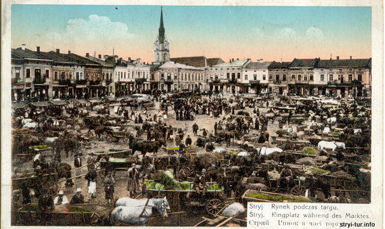

Що можна подивитися?
У Стрию можна прогулятися центральними вулицями, побачити архітектуру міста та відвідати зелені зони для відпочинку.

Центр міста
Центральна частина міста підходить для прогулянок, зустрічей і знайомства з атмосферою Стрия.
Парки
Зелені зони підходять для спокійного відпочинку, прогулянок і фотографій.

Архітектура
Архітектурні об’єкти міста відображають його історію та культурний розвиток.